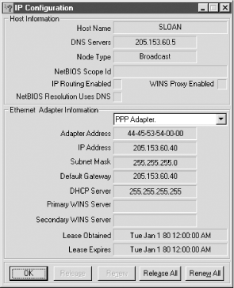

2.3. Microsoft Windows
Networking with Windows can be quite
complicated, since it may involve Microsoft's proprietary
enhancements. Fortunately, Microsoft's approach to TCP/IP is
pretty standard. As with Unix, you can approach the various versions
of Windows by looking at configuration parameters or by using
utilities to examine the current configuration. For the most part,
you won't be examining files directly under Windows, at least
for versions later than Windows for Workgroups. Rather, you'll
use the utilities that Windows provides. (There are exceptions. For
example, like Unix, Windows has
hosts,
protocol, and
services
files.)
If you are looking for basic information
quickly, Microsoft provides one of two programs for this purpose,
depending on which version of Windows you use. The utility
winipcfg is included with Windows 95/98. A
command-line program,
ipconfig, is included with
Windows NT and Windows 2000 and in Microsoft's TCP/IP stack for
Windows for Workgroups. Both programs provide the same information.
winipcfg produces a pop-up window giving the
basic parameters such as the Ethernet address, the IP address, the
default route, the name server's address, and so on (see
Figure 2-2). You can invoke the program by entering the
program name from
Run on the start menu or in a
DOS window. The most basic parameters will be displayed. Additional
information can be obtained by using the
/all
option or by clicking on the More Info
>>
button.

Figure 2-2. winipcfg
For
ipconfig, start a DOS window. You can use
the command switch
/all to get the additional
details.
As in Unix, the utilities
arp,
hostname, and
netstat are available. All require a DOS window
to run. There are a few differences in syntax, but they work
basically the same way and provide the same sorts of information. For
example,
arp -a will list all the entries in the
ARP table:
C:\>arp -a
Interface: 205.153.63.30 on Interface 2
Internet Address Physical Address Type
205.153.63.1 00-00-a2-c6-28-44 dynamic
205.153.63.239 00-60-97-06-22-22 dynamic
The command
netstat
-r gives the computer's routing table:
C:\>netstat -r
Route Table
===========================================================================
Interface List
0x1 ........................... MS TCP Loopback interface
0x2 ...00 10 5a a1 e9 08 ...... 3Com 3C90x Ethernet Adapter
0x3 ...00 00 00 00 00 00 ...... NdisWan Adapter
===========================================================================
===========================================================================
Active Routes:
Network Destination Netmask Gateway Interface Metric
0.0.0.0 0.0.0.0 205.153.63.1 205.153.63.30 1
127.0.0.0 255.0.0.0 127.0.0.1 127.0.0.1 1
205.153.63.0 255.255.255.0 205.153.63.30 205.153.63.30 1
205.153.63.30 255.255.255.255 127.0.0.1 127.0.0.1 1
205.153.63.255 255.255.255.255 205.153.63.30 205.153.63.30 1
224.0.0.0 224.0.0.0 205.153.63.30 205.153.63.30 1
255.255.255.255 255.255.255.255 205.153.63.30 205.153.63.30 1
===========================================================================
Active Connections
Proto Local Address Foreign Address State
TCP jsloan:1025 localhost:1028 ESTABLISHED
TCP jsloan:1028 localhost:1025 ESTABLISHED
TCP jsloan:1184 205.153.60.247:telnet ESTABLISHED
TCP jsloan:1264 mail.lander.edu:pop3 TIME_WAIT
As you can see, the format is a little different, but it supplies the
same basic information. (You can also use the command
route
print to list the routing table.) You can use
netstat -a to get the active connections and
services. There really isn't an option that is analogous to
-i in Unix's
netstat
(the option to display attached interfaces). For a listing of the
basic syntax and available commands, try
netstat
/?.
While Windows does not provide
ps, both Windows NT and Windows 2000 provide the
Task Manager (
taskmgr.exe), a utility that can
be used to see or control what is running. If you have the Windows
Resource Kit, three additional utilities, process viewer
(
pviewer.exe), process explode
(
pview.exe), and process monitor
(
pmon.exe), are worth looking at. All four can
be started by entering their names at Start

Run. The Task
Manager can also be started by pressing Ctrl-Alt-Delete and selecting
Task Manager from the menu or by right-clicking on a vacant area on
the task bar at the bottom of the screen and selecting Task Manger
from the menu.
You won't need NT's administrator privileges to use the
DOS-based commands just described. If you want to reconfigure the
system or if you need additional details, you will need to turn to
the utilities provided by Windows. For NT, this will require
administrator privileges. (You'll also need administrative
privileges to make changes with
arp or
route.) This is available from Start
Settings
Control Panel
Network or by following a
similar path from My Computer. Select the appropriate tab and fields
as needed.
If
you are interested in port scanners, a number are available. I have
already mentioned that the
Chesapeake Port
Scanner will run under Windows. Scan the Internet for
others.
Finally, for the really brave of
heart, you can go into the registry. But that's a subject for
another book. (See Paul Robichaux's
Managing the
Windows 2000 Registry or Steven Thomas's
Windows NT 4.0 Registry.)
 |  |  |
| 2.2. System Configuration Files |  | 3. Connectivity Testing |